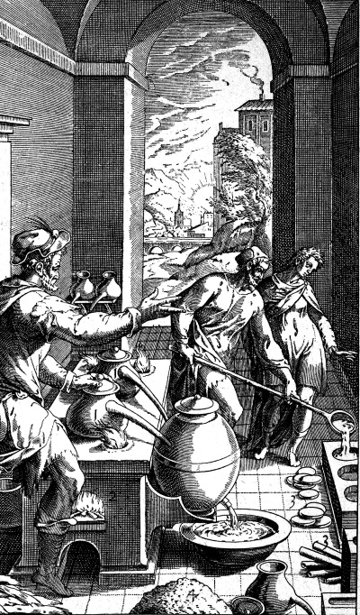

История в бокалах . Крепко, весело и на всех парусах.


Подарок от арабов
В конце I тысячелетия н. э. самым большим городом и культурным центром Западной Европы был не Рим, Париж или Лондон, а Кордова, столица арабской Андалусии в южной части Испании. Парки, дворцы, мощеные улицы с масляными светильниками, семьсот мечетей, триста общественных бань и разветвленные дренажные и канализационные системы поражали воображение.
Возможно, самым удивительным местом была публичная библиотека, строительство которой завершилось около 970 года. Ее фонды насчитывали почти полмиллиона книг – больше, чем в любой другой европейской библиотеке или даже во всех европейских библиотеках, вместе взятых. А это была просто самая большая из 70 городских библиотек. Неудивительно, что Хросвита (Хросвита
Гандерсгеймская – немецкая монахиня, поэтесса периода «Оттоновского возрождения». – Прим, перед.) назвала Кордову «жемчужиной мира».
Кордова была лишь одним из величайших центров обучения в арабском мире, который простирался от Пиренеев во Франции до Памирских гор в Центральной Азии, а на юге до долины Инда в Индии. В то время, когда в большей части Европы греческие мудрости были забыты, арабские ученые в Кордове, Дамаске и Багдаде черпали знания из греческих, индийских и персидских источников, чтобы добиваться невероятных успехов в таких областях, как астрономия, математика, медицина и философия. Они придумали алгебру и десятичную цифровую систему, впервые использовали травы в качестве анестетиков и разработали новые навигационные методы, основанные на сферической тригонометрии, усовершенствованной астролябии и магнитном компасе, изобретенном в Китае. Среди их многочисленных достижений улучшение и популяризация технологии дистилляции.
Процесс перегонки – разделения жидкостей на отличающиеся по составу фракции – стар как мир. Простая дистилляционная техника, относящаяся к IV тысячелетию до н. э., была обнаружена в Северной Месопотамии, где, судя по всему, ее использовали для изготовления духов. Греки и римляне также были знакомы с этим методом. Аристотель, например, отметил, что пары, конденсированные из кипящей соленой воды, не были солеными. Но только в VIII веке арабский ученый Джабир ибн Хайян, которого считают одним из отцов химии, разработал улучшенную форму дистилляционного аппарата, с помощью которого перегонял алкоголь и другие вещества для своих экспериментов.
Дистилляция вина делала его намного крепче, потому что температура кипения спирта (78 градусов) ниже, чем температура кипения воды (100 градусов). Когда вино медленно нагревается, пар начинает подниматься с поверхности задолго до того, как жидкость закипит. Из-за более низкой температуры кипения алкоголя этот пар содержит больше спирта и меньше воды, чем исходная жидкость. Вытягивание и конденсация этого богатого спиртом пара дает жидкость с более высоким содержанием алкоголя, чем вино. Разумеется, она далека от чистого спирта, поскольку некоторые части воды и другие примеси испаряются при температурах ниже 100 градусов. Однако содержание алкоголя может быть увеличено путем повторной перегонки, известной как ректификация.
Знание о дистилляции было одним из многих аспектов древней мудрости, сохраненное и распространенное арабскими учеными. Будучи переведенным на латынь, оно помогло возродить дух обучения и познания в Западной Европе. Наглядной демонстрацией синтеза древних знаний и арабских инноваций может служить слово alembic (тип перегонного аппарата), образованное от арабского al-ambiq, а то, в свою очередь, от греческого ambix. Так называлась ваза специальной формы, используемая в процессе дистилляции. Точно так же современное слово «алкоголь» свидетельствует о рождении дистиллированных алкогольных напитков в лабораториях арабских алхимиков. Al-kohl – название порошка очищенной сурьмы, который использовали в косметических целях, например для чернения бровей. Этот термин употреблялся алхимиками для обозначения любых высокоочищенных веществ, в том числе жидкостей, так что дистиллированное вино позже стало известно в англоязычных странах как «алкоголь вина».

Оборудование для дистилляции в лаборатории средневекового алхимика
Новые напитки, созданные методом дистилляции в лабораториях алхимиков, стали достоянием всего человечества в эпоху Великих географических открытий. Европейские мореплаватели и исследователи основывали колонии, а затем империи по всему миру, поэтому удобные для перевозки по морю дистиллированные напитки пришлись как нельзя кстати. Роль этих напитков в экономике так возросла, что их налогообложение и контроль над перевозками стали неотъемлемой частью большой политики и иногда буквально определяли ход истории. Арабские ученые рассматривали получавшиеся в ходе дистилляции напитки исключительно как алхимические ингредиенты или лекарства. И только когда знание о дистилляции распространилось в христианской Европе, дистиллированные крепкие напитки вошли в повседневный обиход.
Чудесное лекарство?
В зимнюю ночь 1386 года королевских врачей вызвали в спальню Карла II Наваррского, правителя маленького королевства на территории нынешней Северной Испании. Король был известен как «Злой» – прозвище, которое он заработал в начале своего правления, когда с особой жестокостью расправился с восставшими дворянами. Его любимым занятием были интриги против собственного тестя, короля Франции. И вот теперь, после бурной ночи, Карл был сражен лихорадкой и параличом. Его врачи решили использовать чудодейственное лекарство, полученное в ходе магического процесса дистилляции.
Одним из первых европейцев, экспериментировавших с этим новым процессом, был итальянский алхимик Майкл Салернус (XII век), почерпнувший знания о дистилляции из арабских текстов. «Смесь чистого и очень крепкого вина с тремя частями соли, дистиллированная в обычном сосуде, производит жидкость, которая будет гореть, когда ее поджигают», – писал он. Очевидно, этот процесс был известен в то время только избранным, поскольку Салернус зашифровал несколько ключевых слов («вино» и «соль») секретным кодом. Дистиллированное вино можно было поджечь, поэтому его называли aqua ardens, «горящая вода».
Первым ощущением от выпитого дистиллированного вина было неприятное жжение в горле. Но тот, кто все-таки решался проглотить эту «горящую жидкость», так быстро выздоравливал, что тут же забывал о сиюминутном дискомфорте. Вино и прежде широко применялось в медицинских целях, поэтому казалось логичным, что в концентрированном и очищенном виде оно должно обладать еще большей лечебной силой. К концу XIII века, когда университеты и медицинские школы расцвели по всей Европе, дистиллированное вино представлялось в латинских медицинских трактатах как чудесное новое лекарство aqua vitae, или «вода жизни».
В терапевтической силе дистиллированного вина был уверен и испанец Арнольд из Виллановы, профессор французской медицинской школы в Монпелье, который около 1300 года подготовил инструкцию по дистилляции вина. «Драгоценные капли, которые, будучи очищены тремя или четырьмя последовательными дистилляциями, превращаются в прекрасную квинтэссенцию вина, – писал он. – Мы называем это aqua vitae, и это имя удивительно подходит, так как это действительно вода бессмертия. Этот напиток продлевает жизнь, очищает от недобросовестных настроений, оживляет сердце и поддерживает молодость».
Aqua vitae казалась магической субстанцией, и в некотором смысле так и было, поскольку содержание алкоголя в дистиллированном вине гораздо выше, чем в любом напитке, полученном методом естественного брожения. Даже самые устойчивые дрожжи гибнут, если содержание алкоголя превышает 15 процентов. Дистилляция позволила алхимикам обойти этот предел, известный с момента открытия ферментации тысячи лет назад.
Современник Арнольда, поэт, философ и теолог Раймонд Луллий, объявил aqua vitae «элементом, недавно открывшимся для людей, но скрытым от всех до сих пор, потому что человеческий род был слишком молод, чтобы нуждаться в этом напитке, который предназначен для пробуждения современной энергии в ветхом человечестве». И Арнольд, и Луллий жили дольше 70 лет – необычно преклонный возраст в то время, что, возможно, было воспринято в качестве доказательства особых свойств aqua vitae, способствующих долголетию.
Это замечательное новое лекарство можно было принимать внутрь либо прикладывать в виде компресса к пораженным частям тела. Сторонники aqua vitae полагали, что этот напиток помогает сохранить молодость, улучшить память, справиться с заболеваниями головного мозга, сердца, нервов и суставов, снять зубную боль, излечить слепоту, речевые дефекты и паралич. И даже защитить от чумы. Неудивительно, что эту панацею врачи решили прописать Карлу Злому. Они обернули короля простынями, пропитанными «водой жизни», в надежде, что контакт с магической жидкостью излечит его паралич. Но лечение имело катастрофические последствия: простыни воспламенились от стоявшей рядом с королевским ложем свечки. Говорят, что подданные Карла Злого восприняли его мучительную смерть в огне как божественное наказание, поскольку одним из последних указов короля перед смертью было резкое повышение налогов.
В течение XV века знания о дистилляции широко распространились по миру, и постепенно аквавита трансформировалась из лекарственного средства в напиток, который пьют для удовольствия. Этому процессу способствовало новое изобретение – печатный станок, созданный Иоганном Гутенбергом в 1430-х годах. (Оно было ново, по крайней мере для европейцев, поскольку идея книгопечатания возникла у китайцев за несколько столетий до этого.)
Первую печатную книгу о дистилляции написал австрийский доктор Михаэль Пуфф фон Шрик. Опубликованная в Аугсбурге в 1478 году, она стала так популярна, что выдержала 14 изданий за 12 лет. Фон Шрик утверждал, что, выпивая пол-ложки аквавиты каждое утро, можно избавиться от любой болезни, а маленькая порция, влитая в рот умирающего человека, даст ему силы произнести последние слова.
Но для большинства людей аквавита была привлекательна не своими лечебными свойствами, а способностью быстро и легко опьянять. Дистиллированные напитки стали особенно популярными в прохладном климате Северной Европы с ее скудными и слишком дорогими винами. Дистилляция пива позволяла создавать мощные алкогольные напитки поначалу на основе местных ингредиентов. Гэльский вариант aqua vitae – uisge heatha, от которого произошел английский whisky – стал неотъемлемой частью ирландского образа жизни. Один летописец описал смерть Ричарда Макрахайла, сына ирландского предводителя, который преставился в 1405 году «после того, как выпил слишком много воды жизни, и напиток стал для него водой смерти». В других частях Европы аквавиту называли «жженым вином», в немецком варианте Branntwein, в английском – Brandywine, или просто бренди. Люди повсеместно занялись дистилляцией вина в домашних условиях. Его продажа в праздничные дни разрослась до таких масштабов, что была запрещена в немецком городе Нюрнберг в 1496 году. Местный врач записал: «Учитывая тот факт, что у каждого в настоящее время есть привычка пить аквавиту, каждому надо помнить то количество, которое можно себе позволить, и научиться пить по своим способностям, если человек хочет вести себя подобающе».
Алкоголь, сахар и рабы
Распространение этих новых дистиллированных напитков происходило по мере того, как европейские исследователи открывали мировые морские маршруты – с южной оконечности Африки через Атлантику в Новый Свет. Процесс пошел с изучения португальскими исследователями западного побережья Африки и открытия и колонизации близлежащих атлантических островов, первых ступеней на пути в Америку.
Эти экспедиции были организованы и финансировались португальским инфантом Генрихом Мореплавателем. Несмотря на свое прозвище, Генрих побывал за границей всего три раза, с военными экспедициями в Северной Африке. Именно там он последовательно завоевал, уничтожил, а затем восстановил свою репутацию полководца. Однако главной его страстью была амбициозная программа морских исследований. Генрих основал навигационную школу в Сагреше, финансировал экспедиции, сопоставлял полученные отчеты и наблюдения. Он поощрял своих капитанов использовать такие современные достижения в навигации, как магнитный компас и астролябию, изобретение, которое, подобно дистилляции, было ввезено в Западную Европу арабами. Главным мотивом португальцев, испанцев и других исследователей того времени был поиск альтернативного маршрута в Индию, чтобы обойти арабскую монополию на торговлю пряностями. По иронии судьбы, их возможный успех был отчасти обусловлен использованием технологий, изобретенных арабами.
Мадейра, Азорские и Канарские острова оказались идеальным местом для производства сахара, еще одного арабского «изобретения». Но расширение плантаций сахарного тростника требовало огромного количества воды и рабочей силы. Несмотря на разработанные арабами методы орошения и трудосберегающие устройства (водяной винт, персидские подземные водопроводы и водяные мельницы для переработки сахарного тростника), производством сахара занимались в основном рабы из Восточной Африки. Европейцы захватили многие арабские сахарные плантации во время религиозных войн и Крестовых походов, но не имели опыта выращивания тростника и нуждались в еще большем количестве рабочей силы для поддержания производства. В 1440-х годах португальцы начали поставлять черных рабов с западного побережья Африки. Сначала их похищали, но вскоре португальцы согласились покупать рабов у африканских торговцев в обмен на европейские товары.
Массовое рабство не существовало в Европе с римских времен, отчасти по религиозным соображениям, поскольку христианская доктрина запрещала порабощение одного христианина другим. Этот довод удалось обойти с помощью весьма сомнительных аргументов. Сначала было высказано предположение, что, покупая рабов и превращая их в христиан, европейцы спасают их от ложной доктрины ислама. Затем появился еще один аргумент: черные африканцы, как утверждали некоторые богословы, не совсем люди, поэтому не могут стать христианами. Согласно другой теории, они были «детьми Хама», а значит, их порабощение санкционировано Библией. Эти аргументы поначалу не нашли отклика в обществе. Но удаленность Атлантических островов позволяла не афишировать использование рабского труда. И к 1500 году рабство превратило Мадейру (с несколькими мельницами и 2 тысячами невольников) в крупнейшего экспортера сахара в мире.
Использование рабов в производстве сахара резко возросло после открытия Нового Света Христофором Колумбом в 1492 году. В поисках торгового пути в Индию он отправился на запад и достиг островов Карибского моря. Не обнаружив золота, специй или шелка, чтобы порадовать своих покровителей в Испании, Колумб уверенно объявил острова идеальным местом для выращивания сахарного тростника – бизнеса, который он хорошо знал.
Во время своего второго путешествия в Новый Свет в 1493 году он привез сахарный тростник с Канарских островов. Вскоре началось производство сахара на испанских островах Карибского моря и под контролем португальцев на южноамериканском материке, там, где сейчас находится Бразилия. Попытки поработить коренные народы потерпели неудачу – у них не было иммунитета к заболеваниям, привезенным из Старого Света. Колонистам пришлось импортировать рабов непосредственно из Африки. В течение четырех столетий около 11 миллионов рабов были доставлены в Новый Свет, но даже эта цифра не отражает масштаба человеческих страданий – половина невольников гибла по дороге.
Дистиллированные напитки играли центральную роль в этой ужасающей торговле, которая только расширялась, поскольку британские, французские и голландские сахарные плантации открывались в Карибском бассейне в течение всего XVII века.
Африканские работорговцы снабжали европейцев рабами в обмен на текстиль, ракушки, металлические чаши, кувшины и листы меди. Но наиболее востребованным товаром были крепкие алкогольные напитки. Африканцы в разных регионах уже были знакомы с алкоголем. История создания пальмового, медового и других сортов пива уходит в глубокую древность. Но алкоголь, импортируемый из Европы, вскоре был, по словам одного трейдера, «повсеместно признан», даже в мусульманских странах Африки. В самом начале работорговли, когда в ней доминировала Португалия, африканские работорговцы приобщились к сильным португальским винам. В 1510 году португальский путешественник Валентин Фернандес писал, что представители народа волоф, живущего в Сенегале, «пьяницы, получающие огромное удовольствие от нашего вина».
Вино было удобной формой валюты, но европейские работорговцы быстро поняли, что перевозка бренди гораздо выгоднее. Крепкий алкоголь занимал меньше места в трюме и не портился во время длительного путешествия. Африканцы ценили дистиллированные спиртные напитки, более крепкие (или «горячие»), чем их собственное зерновое пиво или пальмовое вино. И хотя самым ценным товаром, на который обменивались рабы, был текстиль, самым престижным оставался алкоголь.
Вскоре для европейцев стало нормой привозить на переговоры с африканскими торговцами в качестве подарка большое количество алкоголя, известного как dashee или bizy. Европейцы беседовали с африканцами на смеси португальского языка и местных диалектов. В воспоминаниях французского торговца упоминаются такие слова, как qua qua («белье») и singo те miombo («дайте мне крепкий напиток»). По словам Джона Аткинса, британского военно-морского хирурга, африканские работорговцы «не будут заниматься делами «на сухую».
Уильям Босман, голландский работорговец, рекомендовал капитанам ежедневно дарить бренди местным вождям и работорговцам. По его словам, африканцы из Уиды (город в Бенине. – Прим, перев.) вообще не занимались бы бизнесом без достаточного количества даши. «Тот, кто намерен торговать здесь, должен их всячески ублажать», – писал он.
Бренди смазывал колеса работорговли и другими способами. Одна учетная запись показывает, что владельцам лодок, переправлявшим грузы на европейские суда, платили бутылку бренди в день в качестве аванса, плюс дополнительные две-четыре бутылки за день работы, плюс бонусная бутылка по воскресеньям. С охранниками, которые сопровождали рабов от мест содержания до берега, также расплачивались бутылками бренди. Связь между алкоголем, рабами и сахаром стала еще крепче после изобретения нового мощного напитка, изготовленного из отходов сахарного производства. Это был ром.
Первый глобальный напиток
В сентябрьский день 1647 года англичанин по имени Ричард Антон бросил первый взгляд на Карибский остров Барбадос с палубы корабля «Ахиллес». «Чем ближе мы подходили к этому счастливому острову, тем красивее он становился», – писал он. Вид оказался обманчивым – на Барбадосе свирепствовала чума, нарушившая планы путешественников. Вместо нескольких дней Антон прожил на острове три года. За это время он составил подробный отчет о многих растениях и животных острова, обычаях жителей и работе сахарных плантаций.
Первые английские поселенцы прибыли на Барбадос в 1627 году, в тот момент остров был необитаем. Они начали выращивать табак, казавшийся фермерам новой североамериканской колонии Виргинии прибыльной культурой. Но табак Барбадоса, как заметил Антон, «худший… из того, что растет во всем мире». Поэтому поселенцы привезли из Бразилии сахарный тростник, оборудование и технологии. Во время пребывания Дитона на острове сахар стал важнейшим бизнес-проектом, успех которого зависел от рабского труда. Однажды черный раб, которому Антон объяснял принцип работы компаса, спросил, может ли он принять христианство. «Поскольку считал, что быть христианином значит быть обеспеченным всеми теми знаниями, которые я ему передавал». Антон рассказал об этой просьбе хозяину раба, но услышал в ответ, что рабы не могут быть обращены в христианство. «По законам Англии… мы не могли бы сделать христианина рабом» – было сказано Антону. Ведь любые рабы, принявшие христианство, должны быть освобождены, а это остановило бы прибыльный сахарный бизнес.
В течение десятилетий Барбадос доминировал в торговле сахаром, превращая его сахарных баронов в самых богатых людей Нового Света. Плантаторы на Барбадосе получили больше, чем просто сахарный тростник и оборудование из Бразилии. Они научились ферментировать и перегонять как тростниковый сок, так и пену, снятую с него в процессе кипения. Получавшийся в результате мощный алкогольный напиток португальцы назвали тростниковым бренди. Этот процесс впоследствии был усовершенствован – бренди стали делать из мелассы, побочного продукта сахарного производства.
Плантаторы Барбадоса в буквальном смысле вели сладкую жизнь. И даже пили ее.
Согласно Дитону, получающийся в результате напиток, известный как «убийца дьявола», был «дьявольски сильным, но не очень приятным на вкус… Люди пьют слишком много его… действительно слишком много, часто просто спят на земле». Импорт вина и пива обходился слишком дорого, кроме того, эти напитки могли испортиться во время транзита из Европы, но «убийцу дьявола» можно было производить на месте в любых количествах. Дитон отмечал, что его продавали на острове плантаторам, не имеющим своего собственного сахарного производства, по льготным ценам. Ром продают «также проплывающим кораблям» и в заморские земли. Только после отъезда Дитона «убийца дьявола» получил наконец имя, под которым он известен сегодня.
Путешественник, посетивший Барбадос в 1651 году, заметил, что предпочтительным напитком островитян или «главной валютой» был Rumbullion (псевдоним «убийцы дьявола»), сделанный из сахарного тростника, дистиллированный, горячий, адский и страшный напиток. Rumbullion на сленге Южной Англии означает «драку или жестокое столкновение». Возможно, это название было выбрано потому, что злоупотребление этим напитком приводило именно к таким последствиям.
Rumbullion, вскоре трансформировавшийся в ром, распространился по островам Карибского моря. Его давали вновь прибывшим рабам в рамках процесса «приручения», который отсеивал слабых и покорял непослушных. Зависимость от регулярных пайков рома помогала рабам соответствовать предъявляемым к ним требованиям и сглаживала связанные с этим трудности. Использовали его и в качестве стимула. Ловля крыс или выполнение других, особенно неприятных поручений вознаграждалась дополнительными порциями рома. Судя по записям плантаторов, рабам обычно выдавали два или три галлона рома в год (в некоторых случаях до 13 галлонов), которые они могли либо выпить, либо обменять на пищу (gallon – мера объема в английской системе мер, соответствует 3,79-4,55 литра. – Прим, персе.). В итоге ром стал важным инструментом социального контроля. Лигой отмечал, что когда рабы были нездоровы, врач давал каждому «стаканчик этого зелья как настоящее лекарство».
Ром стал популярным напитком моряков, а с 1655 года заменил пиво в традиционном рационе британского Королевского флота в Карибском бассейне. Однако замена галлона скоропортящегося слабого пива половиной пинты рома привела к предсказуемым последствиям и побудила адмирала Эдварда Вернона сначала издать приказ о смешивании рома с двумя пинтами воды ради поддержания дисциплины на кораблях, а затем о добавлении в эту смесь сахара и сока лайма. Этот примитивный коктейль был назван в его честь грогом. Дело в том, что матросы наградили адмирала прозвищем Старый Грограм за то, что Вернон никогда не расставался с плащом из водонепроницаемой ткани грограм.
Проблема заключалась в том, что до изобретения точного ареометра в XIX веке не было простого способа измерить крепость алкогольного напитка, и моряки, которые видели, как их ром разбавляли водой, чтобы сделать из него грог, чувствовали себя обманутыми. Поэтому во избежание волнений морские стюарды, отвечавшие за выдачу рома, измеряли крепость несмешанного напитка, используя эмпирическое правило, разработанное в Королевском арсенале. Они смешивали ром с небольшим количеством воды и несколькими зернами черного пороха, затем нагревали смесь с помощью увеличительного стекла. Если порох не воспламенялся, в нее добавляли больше рома. Если загорался, крепость смеси признавали соответствующей 48-процентному алкоголю. Если смесь была слишком крепкой, она взрывалась, и по традиции моряки имели право наливать себе сами, так как стюард в это время был уже недееспособен.
Замена пива грогом сыграла важнейшую роль в установлении британского превосходства на море в течение XVIII века. Одной из основных причин смерти среди моряков в то время была цинга – болезнь, как известно, вызванная нехваткой витамина С. Лимонный или лаймовый сок, обязательные ингредиенты грога с 1795 года, резко снизили заболеваемость цингой и буквально оздоровили британские экипажи в отличие от их французских коллег, в рацион которых входило три четверти литра вина (эквивалент современной бутылки), а на длинных маршрутах – три шестнадцатых литра eau-de-vie. Поскольку в вине присутствует небольшое количество витамина С, а в eau-de-vie нет, это понизило сопротивляемость французского флота цинге, в то время как Королевский флот, по словам одного военно-морского врача, повысил свою боевую мощь вдвое. Именно грог внес решающий вклад в победу англичан над Испанией и Францией в Трафальгарском сражении в 1805 году. Отныне британских моряков стали называть «лаймиз», дословно «лимонники».
Но все это было в далеком будущем, а когда ром был впервые изобретен, его использовали в качестве валюты для покупки рабов, необходимых для производства сахара, остатки которого перерабатывали в ром, чтобы купить больше рабов. Жан Барбо, французский трейдер, посетив западное побережье Африки в 1679 году, констатировал «большое изменение: французский бренди, который всегда был востребован за границей, отсутствовал, потому что ром уже захватил побережье».
К 1721 году, по словам другого английского трейдера, ром стал «главным бартером» на рабовладельческом побережье Африки, оттеснив даже золото. Он стал основной валютой, которой оплачивались транспортные и охранные услуги. Бренди помог начать трансатлантическую торговлю сахаром и рабами, но ром сделал процесс самодвижущимся и более прибыльным.
В отличие от пива, которое обычно потребляли там же, где производили, и вина, которое обычно производили и продавали в определенном регионе, ром стал результатом конвергенции материалов, людей и технологий со всего мира. Сахарный тростник с островов Полинезии был ввезен в Европу арабами, доставлен в Америку Колумбом и выращен рабами из Африки. Потребителями рома, изготовленного из отходов сахарного производства, были как европейские колонисты, так и их рабы в Новом Свете. Этот напиток обязан своим рождением эпохе Великих географических открытий и, как это ни печально, жестокой работорговле, которую европейцы так долго старались не замечать. Ром был жидким воплощением как взлетов, так и падений первой эпохи глобализации.